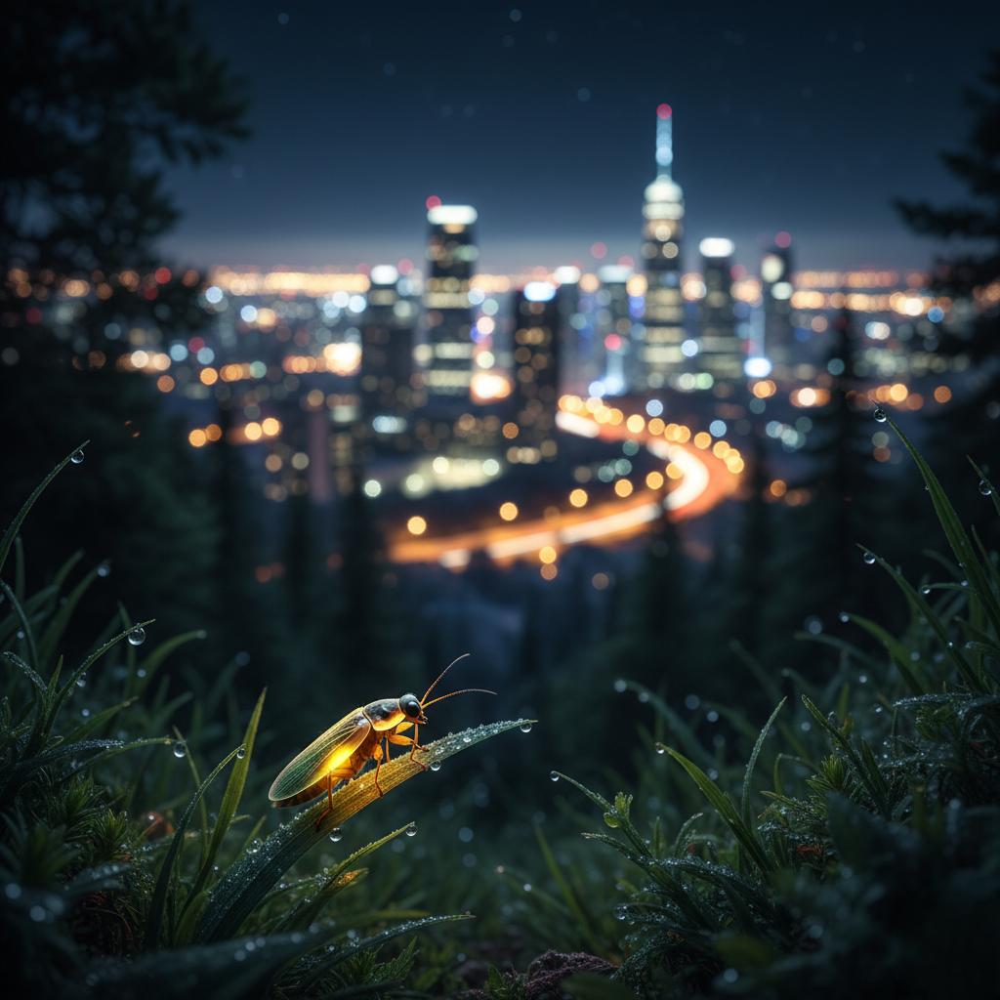

Por que eles estão desaparecendo?
A transformação dos ambientes, a luz artificial à noite e pesticidas estão entre as pressões que ameaçam populações de vaga-lumes.

Um chamado pela vida noturna
Um pequeno brilho que está se apagando do nosso mundo.
A luz dos vaga-lumes faz parte de noites vivas. Pesquisadores apontam ameaças como a perda de habitat, a poluição luminosa e o uso de pesticidas.
A transformação dos ambientes, a luz artificial à noite e pesticidas estão entre as pressões que ameaçam populações de vaga-lumes.
A luz interfere nos sinais luminosos usados por muitas espécies. Proteger a escuridão também é cuidar dos habitats noturnos.
Experimente
A luz artificial pode interferir nos sinais luminosos usados por algumas espécies para se comunicar. Mova o controle e observe uma representação visual da mudança no ambiente.
Ilustração conceitual: o controle não representa uma medição científica nem o efeito sobre uma espécie específica.
Luzes externas apagadas quando não são necessárias ajudam a preservar a escuridão da noite.
Comece perto de você
Marque as atitudes que você já pratica ou quer experimentar. Cada lugar tem condições diferentes; comece pelo que faz sentido para o seu espaço.
Informação com contexto
As ameaças variam entre espécies e regiões. Não existe uma única estimativa global que represente o declínio de todos os vaga-lumes; por isso, esta página não apresenta percentuais ilustrativos como dados reais.